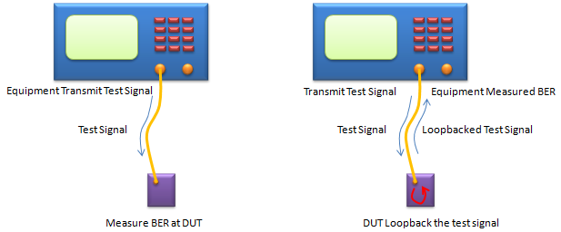
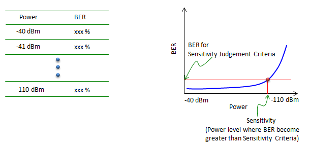
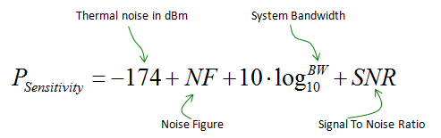

|
RF - Sensitivity Home : www.sharetechnote.com |
|
Sensitivity is an indicator showing how well a device receive the signal and decode it within a 'satisfactory error rate'. (How low the error rate should be for 'satisfactory error rate' is normally defined by a specification of each application). Sensitivity is represented in a power level (e.g, -100 dBm). So the interpretation of the sensitivity value goes like this. Let's assume that you (or specification) set BER 1 % to be the level of 'satisfactory error rate'. and assume that the sensitivity of your device is measured to be -100 dBm. This means that the reciever power level down to -100 dBm, BER measured by the device is lower than 1% and if the reciever power gets lower than -100 dBm, the BER gets larger than 1%. Here goes another case. Let's assume that you have two device (Device A and B). Device A has the sensitivity of -100 dBm and device B has the sensitivity of -110 dBm. In this case, we can say "Device B has better sensitivity and better reception capability".
Now let's think about how to measure the sensitivity of a device. There are a couple of different ways of measuring the sensitivity, but the most common method is as illustrated below. In both case, we use a specific test equipment which can communicate with the specific DUT with same protocol. For example, if the DUT is a bluetooth device, we use a test equipment which is working in bluetooth protocol (e.g, Anritsu MT8852) and if the DUT is WCDMA device, the test equipment which is supporting WCDMA protocol (e.g, NodeB simulator like Anritsu MT8820 or R&S CMW 500)
There can be two different setups to measure sensitivity using these equipments. In the setup shown on the left, the test equipment transmit the test signal (a known bit sequence) and DUT compares the received bit sequence with the bit sequence generated internally and calculate BER (Bit Error Rate). In the setup shown on the right, the test equipment transmit a bit sequence and UE recieves and retransmit (loopback) the received sequence to the equipment, and the equipment compares the transmitted bit sequence and loopbacked bit sequence and calculate the BER.

Usually we cannot figure out the sensitivity in a single step and have to repeat the measurement procedure described above multiple steps with different power level. For example, you can measure BER as explained above with power level -40 dBm and measure BER and write down the value. Next, do the same measurement at power level -41 dBm. Repeat this process all to way down to -110 dBm. If you plot the test result, you would see a plot as shown on the right. In this plot, you can find a point (Power level) where BER gets greater than the specified criteria. That power is called 'Sensitivity'.

The method described above would be the most accurate way to do the sensitivity measurement, but to test in this way you must be ready with the following two items i) Equipment which support protocol stack for the DUT ii) Device should have been fully implemented in terms of baseband, both TX and RX path. Is there any other way to figure out the sensitivity without meeting the criteria listed above. It is impossible to do correct measurement, but there is a way to roughly estimate the value using a formula as shown below. (This equation uses only RF level parameters, like NF(Noise Figure) and System BW and SNR(Signal To Noise Ratio), you can apply this equation to not only a system level but also component level (e.g, Amplifier))

|